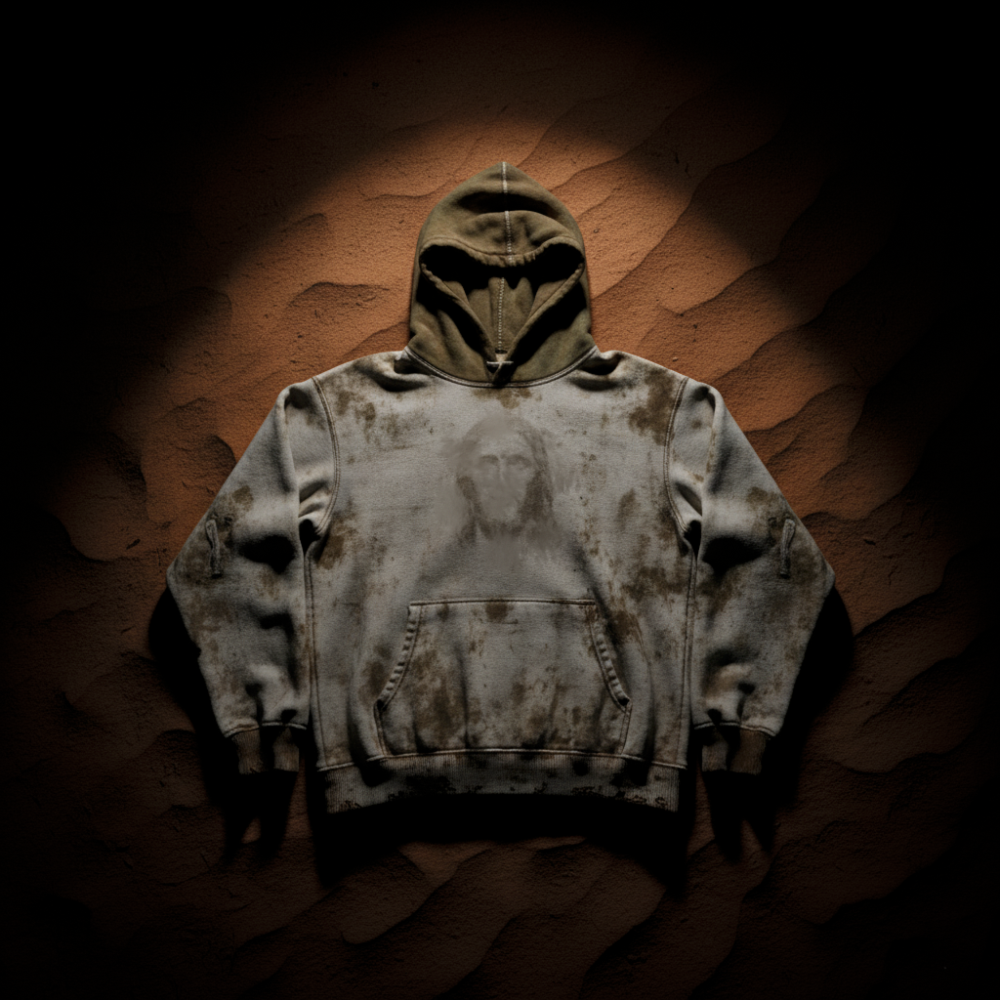

REF_204LOW STOCK
PROPHET'S HOODIE
$320
REVELATION 6:12 — THE GREAT QUAKE
WE DO NOT FOLLOW TRENDS. WE EXCAVATE THE PAST TO CLOTHE THE FUTURE. IMPERFECTION IS THE ONLY TRUE FORM OF BEAUTY.
Inspired by the asceticism of the early monks. Garments designed to age, wither, and tell a story of decay.
Unprocessed, coarse texture from the Dead Sea region. Breathable but armor-like.
Hardware buried in soil for 14 days to create unique rust patina.
Pigments derived from volcanic ash and charcoal. Fades beautifully.
Heavyweight military grade canvas treated with beeswax and paraffin.

Access denied. Historical data only.
> INITIALIZING PROTOCOL...
> LOADING ASSETS... [OK]
> DECRYPTING FILES... [OK]
> WAITING FOR INPUT_
. .
|\ /|
| \ / | LOCATIONS
| \ / | ---------------
| X | [BERLIN] :: 52.5200° N
| / \ | [TOKYO] :: 35.6762° N
| / \ | [NEW YORK]:: 40.7128° N
|/ \|
' '
THE SCRIPTURE
"WE ARE THE SHADOWS IN THE STATIC."